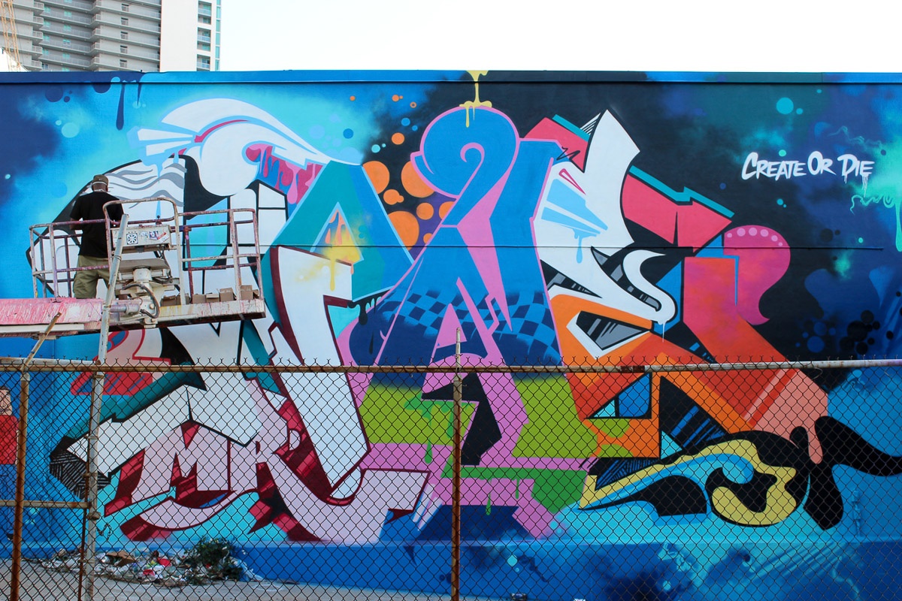
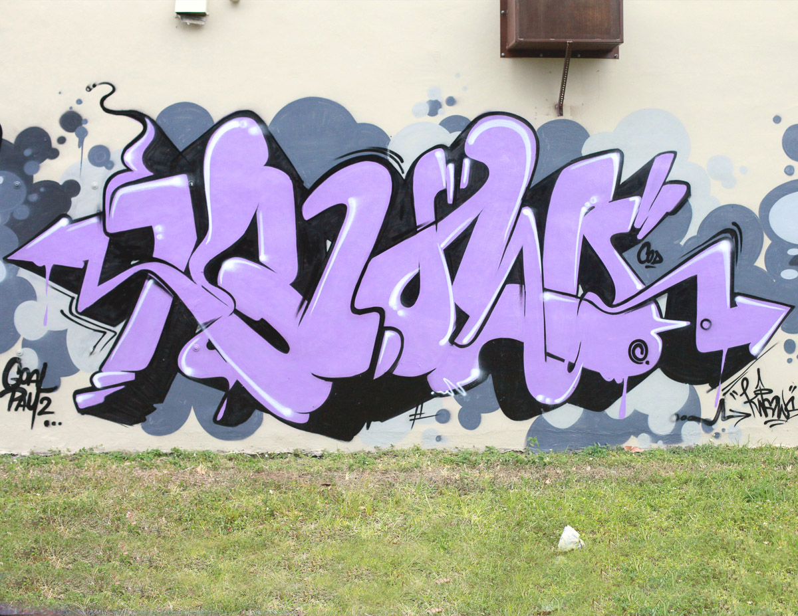
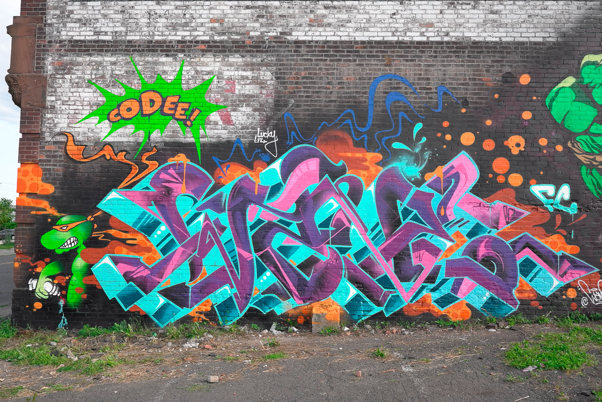

WANE ONE
Graffiti Artist

PRELUDE
Wane was born in the West London and lived in England and Grenada until he was seven. In 1978, his parents brought him and his brother to the U.S. and moved to the North Bronx. In 1983, Wayne became “Wane One” when he painted his first train. Since then he’s created logos for hip-hop groups like Gangstarr, Jeru the Damager, and Group Home and designed for brands like Sean John Menswear, Nike, and Reebok. He divides his time between painting and running his company, Writers Bench. You can see more of his work at his website and Instagram.
CONVERSATION
When you started doing graffiti in the ’80s, did you imagine that you’d be able to make a career out it?
Absolutely not. Prior to when I started writing [graffiti] in 1983, I’d been watching graffiti in my neighborhood and the subway since ’78. It was all around me. But I didn’t expect that, no; it was too far-fetched to imagine.
Somewhere around ’86, I went on a family trip to Virginia Beach. On the beach, I noticed this guy airbrushing t-shirts; he was doing palm trees and “I Love Virginia,” all these little things. When I saw him, I thought, “Wow, that could be me doing t-shirts.” His tool, the airbrush, seemed very similar to a spray can.
I was like, “Well, this could be cool to try to make some money on.” But I had no clue. I asked the guy what the machine was. He’s like, “Oh, it’s an airbrush.” So when I got to New York, I told my older brother and his friend, “Hey, I’d like to get an airbrush.” We didn’t really know where to go, though. It wasn’t like you could Google it. My brother’s friend was like, “I think you can go to a hobby shop. Hobby shops sell air compressors.” So we did that.
I bought a basic kit and started trying to do t-shirts. I was horrible at it. It was hard. It wasn’t like I was that good at graffiti at that point either. So I ended up doing a couple t-shirts for some friends in the building, and then I put the airbrush down. But after some years of painting a lot and getting into trouble with the police I picked it up again.
In ’89, I had a lot of trouble so I wanted to slow down, but I was addicted to doing graffiti. I still kept painting, just not as much. That was one of the only years where I was trying not to paint as much, so I went to my mom’s basement and picked up the airbrush. I started airbrushing every day. I got decent enough to do t-shirts for kids in the neighborhood.
I was airbrushing in an art studio in the city. A year later a guy there said, “Hey, I really like those t-shirts. You should go here. These guys are doing amazing t-shirts. You can get a job.” That was the first time I had a inkling of making a career from graffiti, but it wasn’t really until I was 19 when I knew it was a possibility. Even then, I still wasn’t sure.
As a professional artist—or commercial artist—do you still get the urge to do illegal graffiti?
I do. About six years ago, on some of my travels, I’d meet people in different places and they’d say, “Hey Wayne, I been following you for two decades, man. I was looking up to you when I started and I’m 20 years in it. I can’t believe you still out there.”
The reason I still go out and do it in this so called “illegal” way is because it keeps you grounded. It also keeps you knowing what’s happening in the culture of graffiti, in the real world of how graffiti lives at that moment. If you don’t go out and do it illegally, you’re clueless to what’s really going on. You’re just a commercial artist using a spray can. There’s nothing wrong with that, a spray can has become a medium, but the culture of writing graffiti is a movement. In order to be part of it and contribute to it, you have to go out and do it illegally. You can’t just sit around doing it in a book.
As time went on, so called “legal walls” came about. Meaning, you’ve been painting for years, and then you started asking the owner of a building if you could paint on it. One of the first commissioned walls we got was in the South Bronx on a wall on Boon Avenue, on 175th. This wall was like a block long.
A friend of mine, a very aggressive guy, was known for being a part of a lot of other things on the street in addition to graffiti. Graffiti for him was like, “Yeah, okay, I’m not worried about the altercations that could happen. We should just paint this wall in the daytime.” I was like, “Okay, how we gonna do that? The police are gonna come.” He was like, “No, no, we set it up like we have permission, we set it up like we belong there. If the police come, we don’t run.”
I was like, that’s crazy. He got nine of us to do this, and we did it, and when the police came, he approached them. He approached the police and he convinced them that we belonged there. At that particular time, they were like, “Oh well, they’re doing it in broad daylight, they’re right out here, they got music playing, they got ladders… they must have permission. No one’s running.”
In the Bronx, that gave us a lot of fame at the time. People got to really go, “Oh man, these guys are pushing forward,” because it wasn’t like we were just doing a tag. We were painting full-scale murals with characters and everything. They took a day or two to do, which at that time, didn’t really exist.
People used to come out to look at the walls, or watch the trains go past, and now they use Instagram. How has Instagram been used as a tool within the graffiti community?
When I first came up in the ’80s, I started taking pictures of graffiti because, because I liked to look at it closely. When it moved along the subway I couldn’t really study it. Graffiti as we know it now, or street art, literally happened because of New York City, because of the subway train. It communicated with people in different neighborhoods without them leaving their neighborhood.
Back then, there were thousands of graffiti writers but maybe only a few dozen took photos. Back then people thought it was always going to be on the subway, on a wall or whatever. They just assumed it would stay. It’s like as a kid, if you spend a year going to school and then you go into the next grade, you’re like, “Damn man. It’s gonna be another year, it’s gonna be forever.” You think time takes forever, but it doesn’t. It really goes fast. So only a few people took photos, and I was one of them. We took photos and documented, which was good. Then we met Henry Chalfant who did Style Wars. He was the co-writer of the book Subway Art, which people called the bible. These two things influenced graffiti and street art globally. Without them, it would never be where it is now. If you didn’t live in the five boroughs, you didn’t see it. It didn’t exist.
But, as years passed by, people would be at stations, doing what we call benching, taking photos, or just watching the trains go by. You would meet somebody and first thing you’d ask was, “Hey, what you write?” The guy would say, “Oh, Wane One, or I write Rev One, or I write this.” “Oh man, I seen the block letter you did in ‘83. I thought it was amazing, that was your work? Hey man, we should get together and do something.” Why? Because that was someone that kind of inspired you. You knew their work, but you never met them, you knew nothing about them. That was the only way to share or communicate between writers. The amazing thing about that, which still somewhat exists, except for Instagram today, is that at that particular time for many decades, graffiti writers never showed their face. That’s where that comes from.
People go, “Why you don’t show your face?” The original reason was because obviously it was against the law, so you didn’t want to show your face because you might get arrested. Also, this big aura going on within the culture was that when you met a writer, it meant a lot, because this guy that might have painted this huge top to bottom full wall might have only been five feet two. Some little skinny, scrawny kid from Bay Ridge. Or some fat kid from the south Bronx, or maybe it was a girl, and you didn’t know. When you met that person, you’d be amazed.
Then you would build a distant friendship, so to speak—not always, because sometimes at that time in the ’80s people would try to rob you or try to trick you to set you up. But if it was an artist that was equally as talented, they were definitely an artist at heart. You’d admired each other’s work and that started a dialogue. Then writers would go out together, meet up, try to paint together, and create something special together. There’d be collaborations.
People started putting out graffiti magazines. Then people started coming from Europe and taking photos. We all traded addresses. When we came back, we became pen pals. That’s how the whole thing kinda started: the global network. It started through people being pen pals and these very rare festivals that happened in Europe between Germany, Paris and London. Those were the early early ones. That was the way of sharing, knowing what was going on in what city. As time went on, more magazines happened, more people traveled, and then later on, the biggest way of sharing became the internet. The first graffiti website was called Art Crimes, and now there are thousands of graffiti websites. You can see what everybody’s doing.
Then came Instagram. Along the way, it’s changed how people looked at graffiti and how people were inspired by graffiti. In the beginning, people were only inspired by their neighborhoods or their city or their borough. Later on, people were inspired by mostly New York, then mostly LA, then mostly Paris. Now because of websites, they have what you call “threads” for every city.
What that did for younger generations is… people started just copying. They’d directly copy a style that they liked. Which was a forbidden fruit kind of thing in the ’80s. You couldn’t do that. People did it in a certain way—but they would do it minimally. They would copy someone in their neighborhood, which is kinda like, “Okay, you’re from there, you can do that.” But to directly take somebody’s style and run with it was taboo. As the internet came full circle, it allowed people to either get inspired, or copy directly… So you’d see a guy on the west coast, and he’s doing a east coast style. When Instagram came in, it allowed people to do hybrid styles.
Instagram allows many writers that wrote in the ’80s or in the ’90s to keep going… People’s careers were very short. They only wrote for maybe three, four years. They might’ve written from 13 or 14, to 18 or 19 or 20. Most people careers were like that, back in the day. Then they went to college or got a job or got married or something happened, they went to the military, and they stopped writing because graffiti at that time was a kids game. It was a culture… the subculture was from kids. It was created by kids. Today, it’s a man’s game.
Instagram’s allowed people to build a wall in their backyard. They paint something, then they take a picture of it. They post it, then five, ten minutes later they go over it. Instagram has allowed people to share this instant gratification, instant fame, instant self-promotion. No matter who you are, there are very few writers that are not on Instagram. There are a few die hard guys that’ve been writing for a long time that won’t go on it… They’re not there. Then there are young guys out bombing a lot, and it’s dangerous for them to be on there because the law can find you.
For most people, it’s just shameless self promotion, but everybody uses it. Not only that, it’s become very popular with making money. Let’s say I post a sketch or something. Some guy’ll say, “Oh man I really like that. You selling it?” People who might’ve wrote a long time ago, “Oh my god. People making money on this. Okay, I used to write.” Now they’re writing again.
Making a living on painting graffiti is almost impossible because people are not really educated on who’s really good and who’s put in the work, paid their so called dues and been around. To a lot of people, these things are not important. But if someone’s gonna hire a plumber to run a plumbing system through a building, they’re not gonna hire a guy straight out of school to do it. They’re gonna hire a guy that’s been in the business 15, 20 years. In graffiti, people don’t do that. The first guy they see with a spray can, they go, oh yeah, there he is.
Instagram made a lot of people want to be professional artists, or allowed them to sell their work in a professional arena. Who’s to say that’s good or bad? It could work both ways. Now, this also allowed corporate companies to reach out to certain artists they might have found on Instagram and say, “Hey, we have a particular wall, we need a mural, we kinda like what you’ve been doing. Come into the office.” These things had never happened before. Before it was always word of mouth or someone knew someone.
A lot’s changed. What’s stayed the same?
One of the things that’s happening with the whole culture is a division between graffiti and street art. It’s always been around. People want to divide people. You’ve got people that are like, “I’m such a purist of graffiti, I’m a graffiti purist and I’m a street art purist, street artists hate graffiti writers and vice versa…”
You have different people trying to survive in one space, because it’s the street. What people have to remember is they have to respect all aspects of the art and the culture. If you’re a street artist and you go out into the street and wheat paste over a tag, the person that did that tag is going to be angry. That tag is that person’s work. And, vice versa: If a guy that did a tag over someone’s wheat paste, it’s a full disrespect. Sometimes on either side, people don’t really see someone’s work as artistic, or a masterpiece. Who are we individually, to look at someone’s work and say, “Oh, that’s not art”? The only thing I can say is: There’s space out there for everyone and people should try to respect everybody’s art.
Graffiti has inspired high fashion, it’s inspired music, it’s inspired graphic design. We’re all out there contributing. We’re all part of a great movement. We have to find a way to get along. We all belong there. So to everyone out there: go out, do your art, try to be respectful of other people’s art, and just try to push it forward. Be honest with it and try to learn a little bit about the history. Even though it’s maybe about 40, 50 years old, it’s still relatively young. If we don’t document it, tell the story or the history, this movement, which is the only art that’s been invented by youth in America, is gonna die.
SOME THINGS
Wane One's Top 5:
CREATE LOVE TRAVEL LEARN DO
Wane One's Top 5:
CREATE LOVE TRAVEL LEARN DO